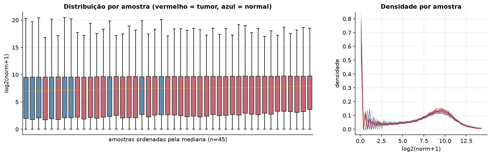
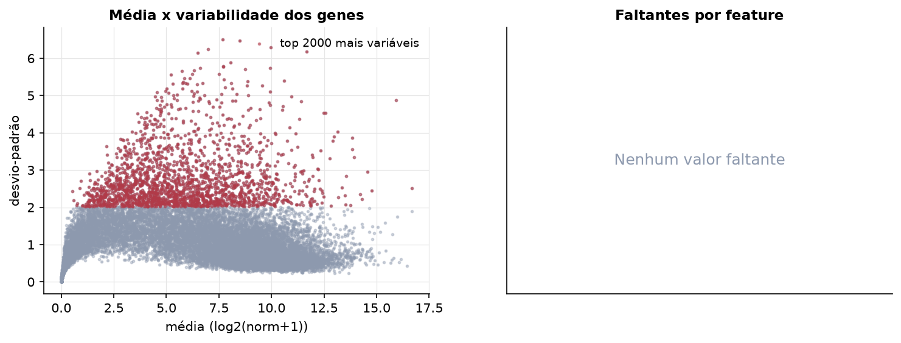
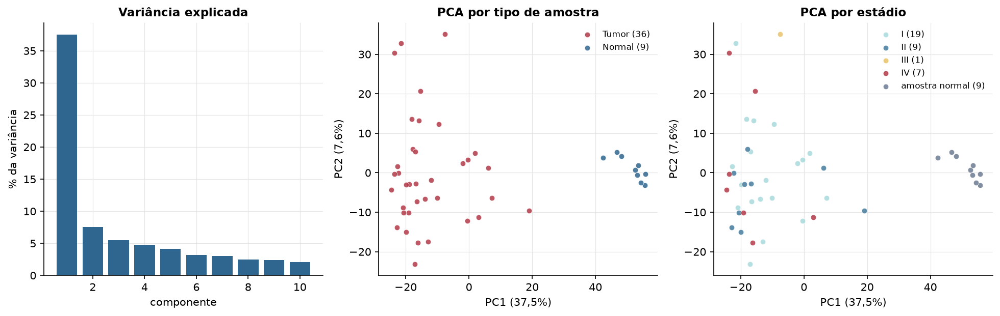
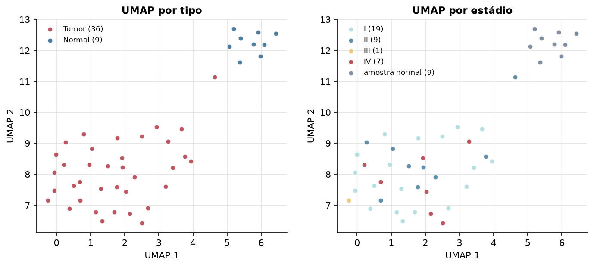
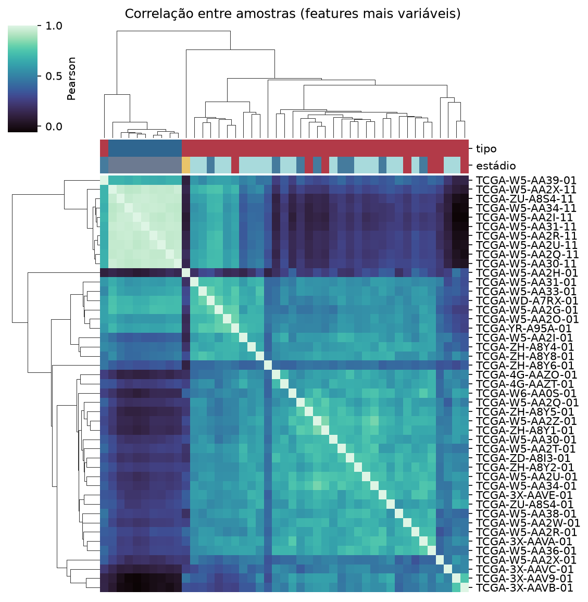
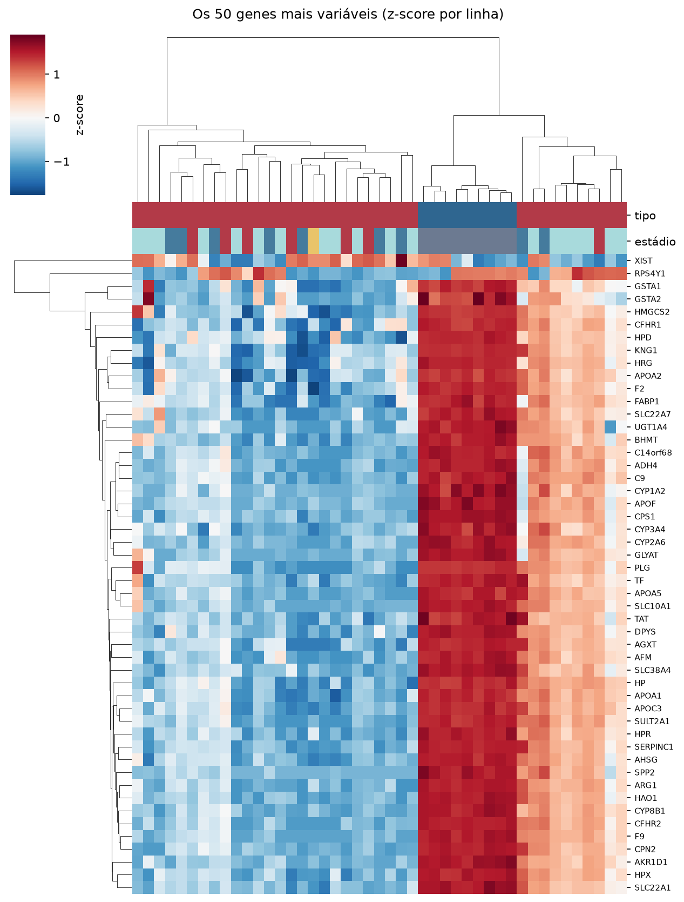
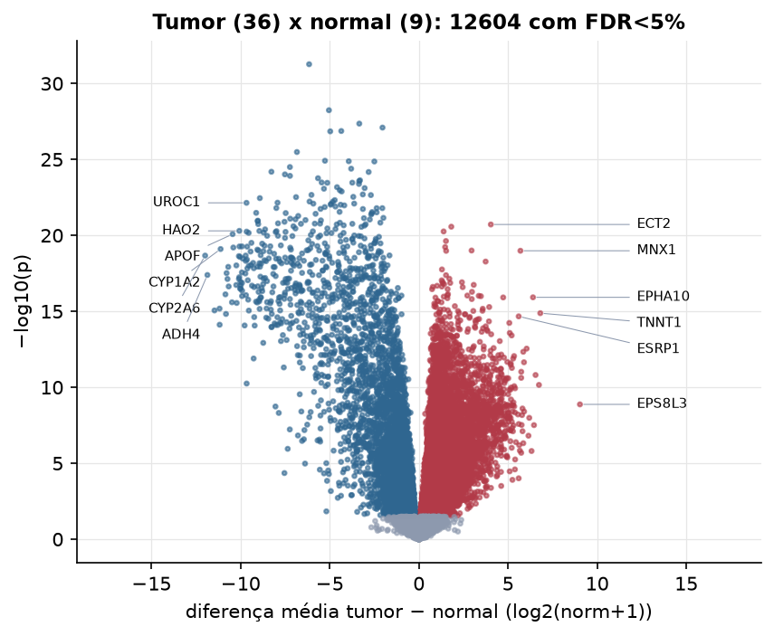
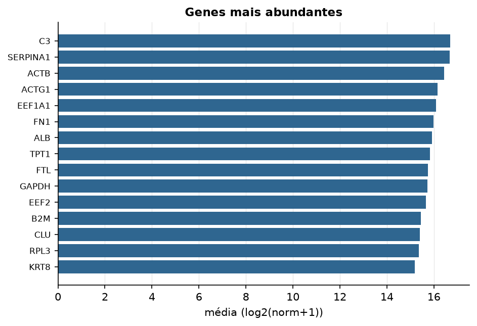

CHOL · RNA-seq (PanCanAtlas)
Illumina HiSeq, RSEM normalizado e corrigido por lote (EB++), log2(x+1) · gerado em 21/10/2026 16:49
20.531genes
36amostras tumorais
9amostras normais
0,0%valores faltantes
Fonte: PanCanAtlas EB++ via API do Xena
Estes valores já vêm normalizados e com correção de lote entre plataformas e centros. Servem bem para modelos gaussianos ou redes neurais; para um modelo de contagem use as contagens brutas do GDC.
Principais resultados
- 20.531 genes medidos em 45 amostras (36 tumorais e 9 normais); 0,0% dos valores estão faltando.
- Os dois primeiros componentes principais explicam 37,5% e 7,6% da variância das features mais variáveis.
- Correlação mediana entre amostras: 0,54.
- Tumor x normal: 12604 genes diferentes com FDR < 5% (8429 maiores no tumor, 4175 maiores no normal; 9 pacientes têm o par tumor-normal).
- Mais aumentados no tumor: ECT2, SMARCA4, DNAJC9, YKT6, CNOT6, EZH2, MNX1, DCTPP1.
- Mais reduzidos no tumor: PLGLA, LCAT, HMGCL, C3orf23, CIDEB, ACADSB, SLC6A13, KHK.
- Associações clínicas com p < 0,05 nos componentes principais: PC1 com sexo (p=0.021).
- Em mediana, 81,2% dos genes têm expressão acima de log2(norm+1)=1 em cada amostra.
Distribuição dos valores


Estrutura das amostras




Tumor x normal

Features mais diferentes entre tumor e normal
| diferenca_tumor_menos_normal | t | p | fdr | |
|---|---|---|---|---|
| PLGLA | -6.157 | -34.436 | 5.43e-32 | 1.07e-27 |
| LCAT | -5.047 | -27.735 | 5.78e-29 | 5.68e-25 |
| HMGCL | -3.343 | -26.248 | 4.41e-28 | 2.89e-24 |
| C3orf23 | -2.041 | -27.792 | 8.04e-28 | 3.95e-24 |
| CIDEB | -4.354 | -25.537 | 1.35e-27 | 4.65e-24 |
| ACADSB | -4.973 | -25.557 | 1.42e-27 | 4.65e-24 |
| SLC6A13 | -6.842 | -23.917 | 3.26e-26 | 9.16e-23 |
| KHK | -5.269 | -22.92 | 1.22e-25 | 2.69e-22 |
| PHYH | -3.934 | -22.761 | 1.32e-25 | 2.69e-22 |
| AIG1 | -2.498 | -23.091 | 1.37e-25 | 2.69e-22 |
| FOLH1B | -7.235 | -22.595 | 3.18e-25 | 5.69e-22 |
| C5orf33 | -3.799 | -22.308 | 4.08e-25 | 6.69e-22 |
| ZG16 | -8.273 | -21.879 | 6.49e-25 | 9.46e-22 |
| FAM82A1 | -2.819 | -22.813 | 6.74e-25 | 9.46e-22 |
| SLC27A5 | -7.514 | -21.743 | 9.68e-25 | 1.27e-21 |
| NR1I3 | -7.231 | -22.522 | 1.21e-24 | 1.49e-21 |
| MST1 | -5.659 | -21.638 | 1.73e-24 | 2e-21 |
| ADAMTS13 | -3.303 | -22.209 | 2.38e-24 | 2.6e-21 |
| CRYL1 | -3.348 | -21.136 | 2.67e-24 | 2.76e-21 |
| ABAT | -5.454 | -21.125 | 3.3e-24 | 3.1e-21 |
| ACAA1 | -3.736 | -25.567 | 3.39e-24 | 3.1e-21 |
| FBP1 | -5.14 | -21.898 | 3.47e-24 | 3.1e-21 |
| ADI1 | -3.36 | -27.761 | 4.13e-24 | 3.53e-21 |
| MFAP3L | -4.593 | -21.169 | 6.73e-24 | 5.51e-21 |
| GRHPR | -3.043 | -22.098 | 7.73e-24 | 6.08e-21 |
| ANG | -5.326 | -21.097 | 8.5e-24 | 6.43e-21 |
| CD302 | -4.437 | -20.858 | 1.07e-23 | 7.77e-21 |
| ALDH2 | -4.332 | -21.417 | 1.29e-23 | 9.05e-21 |
| ALDH5A1 | -3.146 | -21.009 | 2.02e-23 | 1.37e-20 |
| SARDH | -6.026 | -21.424 | 2.17e-23 | 1.41e-20 |
Associação com variáveis clínicas
p-valores da associação dos três primeiros componentes principais (só tumores) com estádio (Kruskal-Wallis), sexo (Mann-Whitney), idade (Spearman) e sobrevida global (Cox univariado).
| estádio (Kruskal) | sexo (Mann-Whitney) | idade (Spearman) | sobrevida OS (Cox) | |
|---|---|---|---|---|
| PC1 (14,4%) | 0.299 | 0.021 | 0.932 | 0.393 |
| PC2 (10,7%) | 0.621 | 0.197 | 0.31 | 0.936 |
| PC3 (8,2%) | 0.891 | 0.095 | 0.055 | 0.541 |
Mais abundantes
